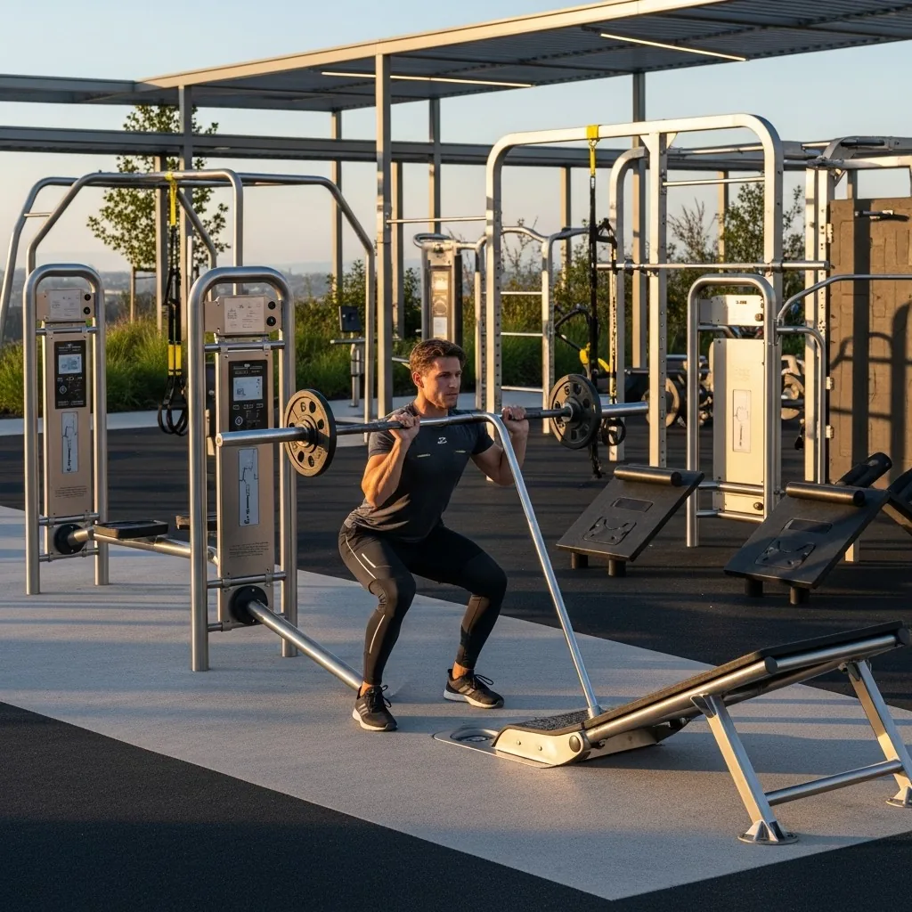
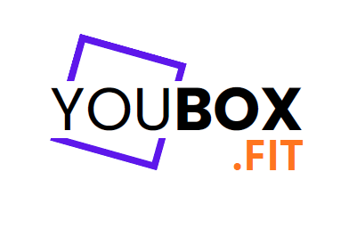
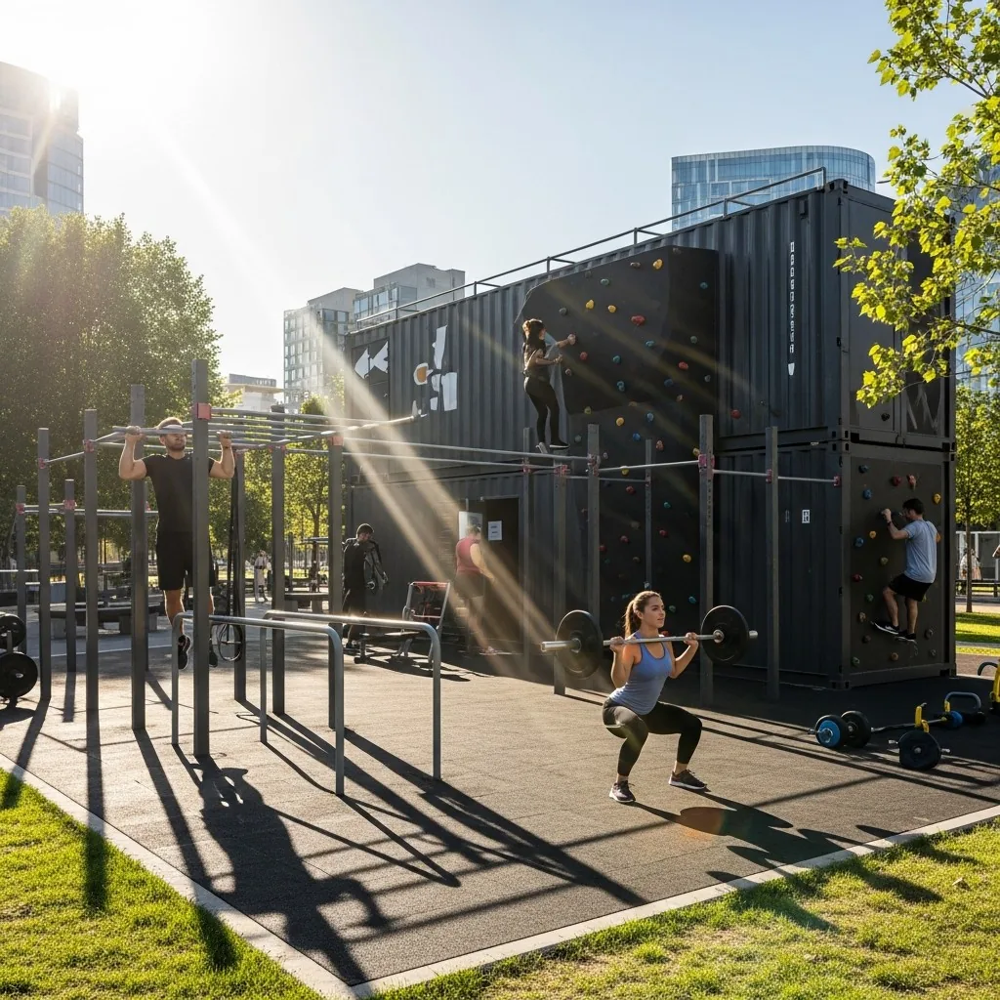
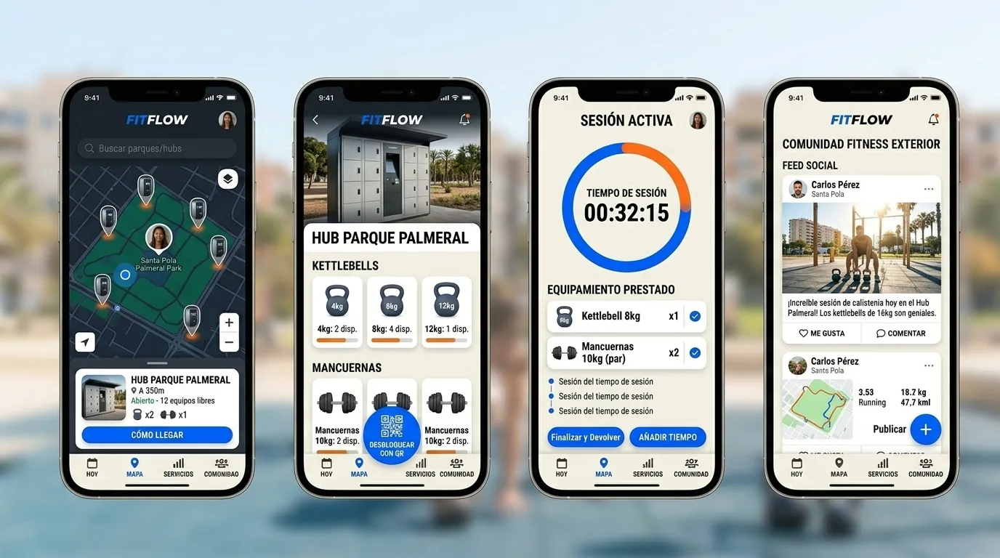
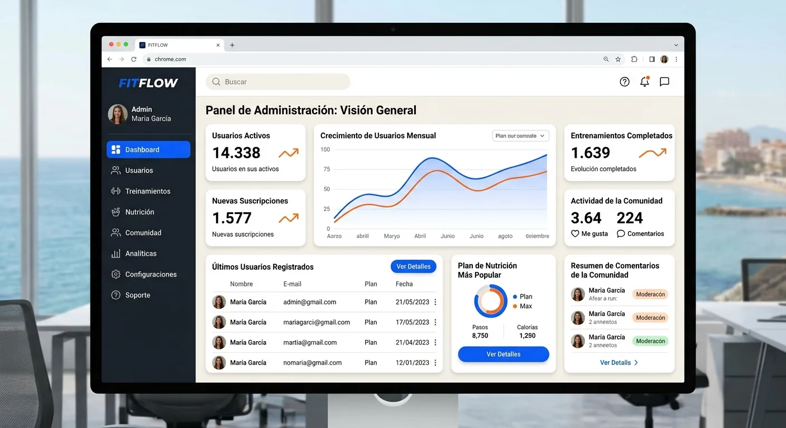
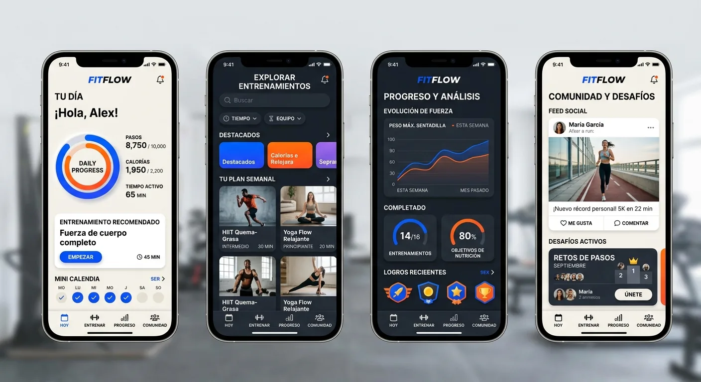
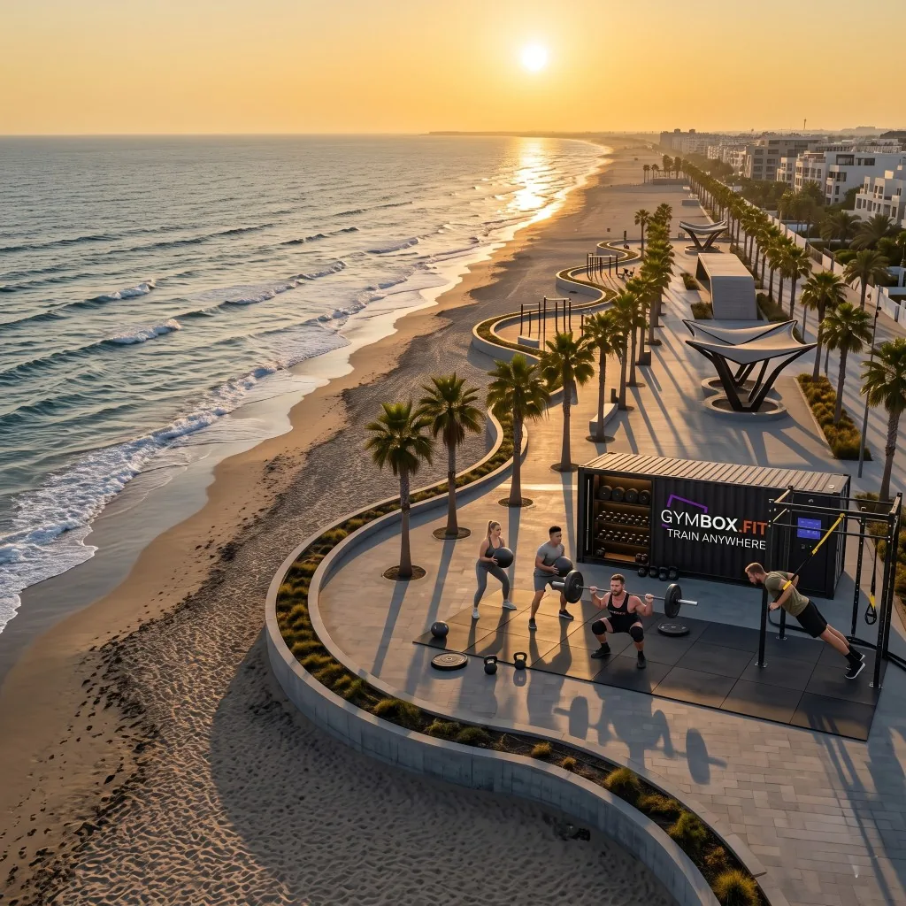
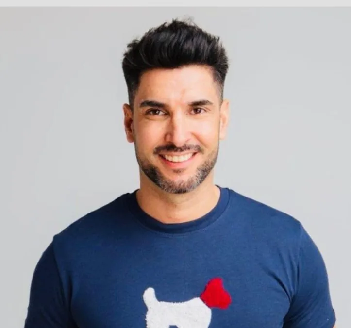

Raspberry Pi 5 + NAU7802
Pesaje Diferencial Milimétrico
Células de carga en cada máquina miden repeticiones y kilos reales. Telemetría de uso y desgaste sin wearables.


Candidatura Oficial · 1ª Convocatoria IAT ODISSEA · Ceuta
3-8
Personal
Empleados por turno que exige un gimnasio convencional. En el litoral, ese coste fijo hace inviable cualquier punto deportivo fuera del casco urbano.
Vandalismo
Las máquinas de calistenia municipales se oxidan, se rompen y nadie lo detecta. Sin control de acceso, el mantenimiento es reactivo y carísimo.
CERO DATOS
Datos
La administración invierte en equipamiento deportivo sin saber quién lo usa, cuándo ni cuánto. Imposible justificar la inversión pública.
Un contenedor de 20 pies reconvertido en gimnasio blindado. Se instala en 48 horas, resiste la corrosión marina y se traslada sin obra civil.
Cubierta fotovoltaica con baterías: cero conexión a red, cero factura eléctrica. Autonomía total en cualquier punto del litoral de Ceuta.
El usuario reserva en la app, escanea y entra. Sin personal, sin llaves, con registro de cada acceso en tiempo real.

Raspberry Pi 5 + NAU7802
Células de carga en cada máquina miden repeticiones y kilos reales. Telemetría de uso y desgaste sin wearables.

HMAC-SHA256 (TTL 5 min)
Códigos firmados que caducan a los cinco minutos y se validan sin internet. Si cae la red, el hub sigue abriendo.

B2G / B2B
Cuota mensual por hub instalado más licencia SaaS anual del panel de gestión. Ayuntamientos, hoteles, puertos deportivos. Recurrente desde el día uno.

B2C / Turismo Activo
Pases de 24 h para visitantes y suscripción mensual para residentes. YouBox.Fit retiene el 15% de comisión de plataforma.


Learning
by Doing.
Prototipo funcional, no PowerPoint. Iteramos en el litoral real con FEDER como palanca.

Hoja de Ruta de Ejecución Inmediata a 12 meses:
Lo que pedimos a ODISSEA
Incubación IAT, acceso a suelo público piloto y cofinanciación FEDER para el primer hub. A cambio: datos, empleo tech local y una Ceuta más activa.